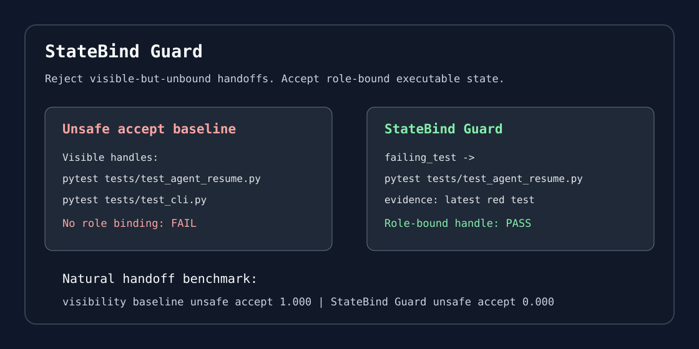

One command proof
Run a self-contained bad-vs-good handoff validation before wiring anything into your repository.
CI-native reports
Emit JSON, SARIF, Markdown summaries, HTML reports, GitHub annotations, and action outputs so failures can be routed by CI.
Benchmark-backed claim
Seed, natural handoff, failure-corpus, and deployed-corpus suites test visible-but-unbound failure modes.
Adoption audit
Scan one repo or scout a batch before wiring CI to find handoff-like files, adoption gaps, and the smallest first PR.
Policy-as-code
Use minimal, bugfix, CI-failure, release, migration, and benchmark presets for team-specific gates.
Launch-ready package
Copy-paste proof snippets, maintainer pitch, and adoption path for coding-agent and CI audiences.
Feedback-ready
Citation metadata, roadmap, adoption reports, and failure-case templates make real-world feedback easy to capture.
External adoption receipt
A separate public repository consumes the released action and publishes JSON, SARIF, Markdown, and HTML reports.
30-second setup
The starter scaffold is intentionally small: one human-readable handoff, one JSON contract, one policy, one workflow.
python -m pip install "git+https://github.com/FU-max-boop/statebind-guard.git@v0.1.32"
statebind audit --repo . --markdown statebind-adoption-audit.md
statebind audit --repo-url https://github.com/owner/repo --issue-template statebind-maintainer-note.md
statebind scout --repo-list candidate-repos.txt --issue-dir statebind-notes --result-card statebind-scout-card.md
statebind scout --github-list candidate-github-repos.txt --issue-context --issue-context-card statebind-issue-context.md --issue-dir statebind-notes --result-card statebind-scout-card.md
statebind proof
statebind init --goal "keep coding-agent handoffs executable" --next-command "make test"
statebind policy --preset bugfix --out .statebind-policy.json
statebind install-hook --policy .statebind-policy.json
statebind doctor
git add HANDOFF.md statebind.json .statebind-policy.json .github/workflows/statebind-guard.yml
What it validates
Role
Is this handle the failing test, comparison base, active patch, current artifact, or something else?
Handle
Is the executable object exact: command, file path, PR URL, issue, commit SHA, branch, or artifact?
Evidence
Why should the next agent trust this binding, and what ambiguity remains?
Use it in CI
The composite action can be pasted into any repository that stores
agent handoffs. Run statebind doctor --repo . locally
after copying it.
- uses: FU-max-boop/statebind-guard@v0.1.32
with:
handoff: HANDOFF.md
statebind-json: statebind.json
policy: .statebind-policy.json
fail-on: warningExternal adoption receipt
A separate public repository pins the released action, asserts its
outputs, and uploads validation artifacts. This proves the action
works across a normal repository boundary, not only with
uses: ./ dogfooding.
repo: FU-max-boop/statebind-guard-adoption-example
run: 26683277633
commit: 859c500
result: passed=true, errors=0, warnings=0